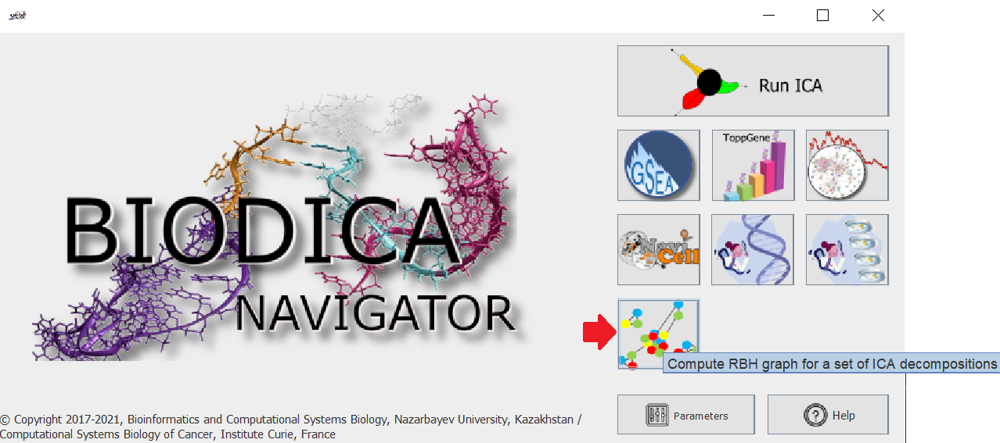
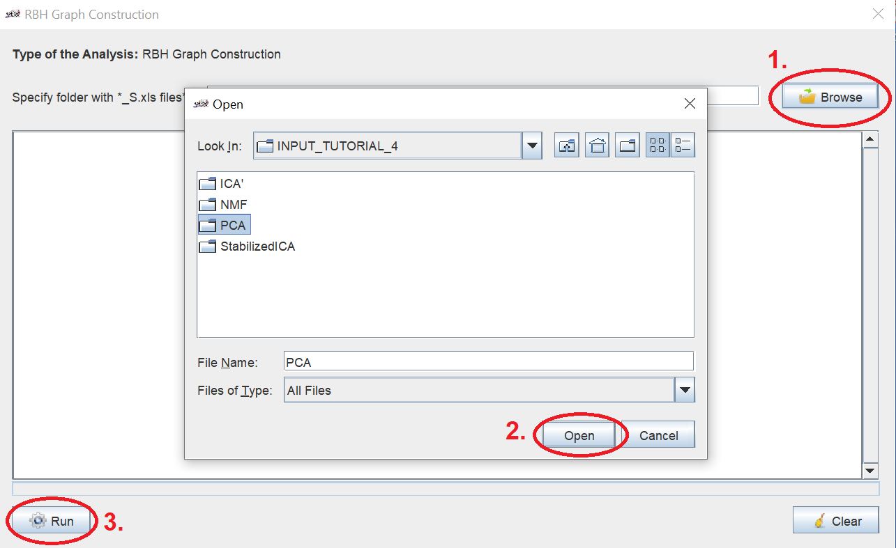

Constructing a RBH (Reciprocally Best Hit) graph for between datasets reproducibility analysis
Laura Cantini
Big Data (including bulk transcriptomic, epigenetic, proteomic and single-cell data) are currently a standard in biology. To leverage their full power, Matrix factorization (MF) approaches, reducing high-dimensional data into low dimensional subspaces, are gaining particular traction. Despite a wide use of MF methods in bioinformatics, their reproducibility between independent datasets of the same nature (e.g., independent patient cohorts of the same cancer type) has never been systematically assessed.
In Cantini et al. 2018 a framework was suggested for the careful assessment of the reproducibility of the standard MF methodologies : Principal Component Analysis (PCA), Non Negative Matrix Factorization (NMF) and Independent Component Analysis (ICA). Here, we show how BIODICA can be used to reproduce the results obtained with that framework. The same approach can be easily applied to add other methodologies to our comparison or to test the same methodologies in a different biological context.
Using BIODICA Navigator
Input data
The metagenes obtained on colorectal cancer (CRC) from PCA, NMF and StabilizedICA and ICA’ in Cantini et al. 2018 are currently available in BIODICA/tree/master/data/INPUT_TUTORIAL_4 to reproduce the analysis follow the steps below.
Run the RBH graph reconstruction
- Launch the BIODICA Navigator by executing
java -jar -Xmx5000m BIODICA_GUI.jar -
Among the different icons choose the RBH Graph Construction
 -
Considering that we are interested in constructing the RBH graph for PCA, browse to the folder BIODICA/tree/master/data/INPUT_TUTORIAL_4
 IMPORTANT! to construct the RBH graph for metagenes externally constructed, make sure to save all the files in the format _S.xls
It is possible to repeat the same analysis for the other MF methods by accessing the correpsonding folders inside BIODICA/tree/master/data/INPUT_TUTORIAL_4
-
In the same folder of the input data (BIODICA/tree/master/data/INPUT_TUTORIAL_4) you can find the output files:
-
correlation_graph_norecipedges.xgmmlthe file format is compatible for the visualization and analysis with Cytoscape -
RBHGraph.htmlto visualize and explore the obtained RBH graph

Figure. Example of RBH network obtained in CRC over 14 trascriptomic dataset of CRC Cantini et al. 2018
-
Execution from command line
You can also run the same analysis on PCA metagenes from command line. To do so, from your root folder for BIODICA, type:
java -Xmx5000M -cp ./BIODICA_GUI.jar BIODICAPipeLine -config config -dobbhgraph ./data/INPUT_TUTORIAL_4/PCA/
Some modifiers are available to be used for RBH graph construction in the command line version:
#split first splits the metagenes into positive and negative tails and then reconstruct the RBH network having two nodes (positive and negative) for each metagene.
#longtail constructs the RBH graph computing correlation only between longer tails of the metagenes.
For example, to use the ‘longtail’ modifier, one should run
java -Xmx5000M -cp ./BIODICA_GUI.jar BIODICAPipeLine -config config -dobbhgraph ./data/INPUT_TUTORIAL_4/PCA/#longtail